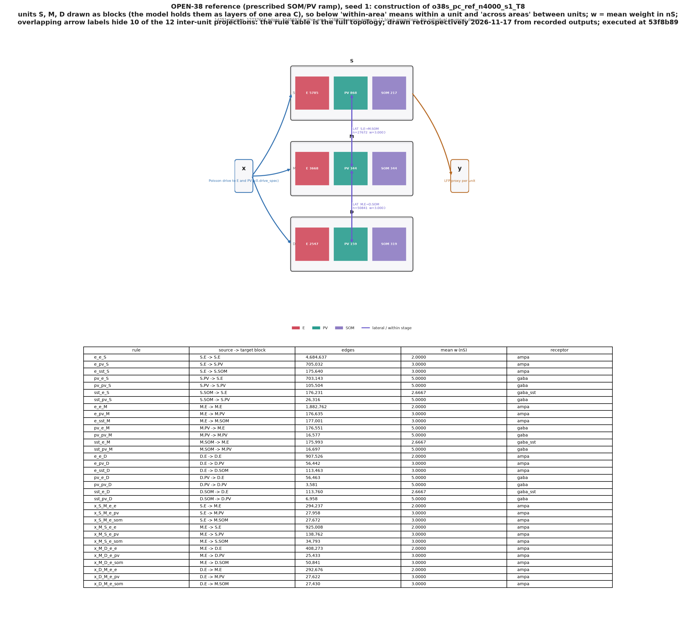
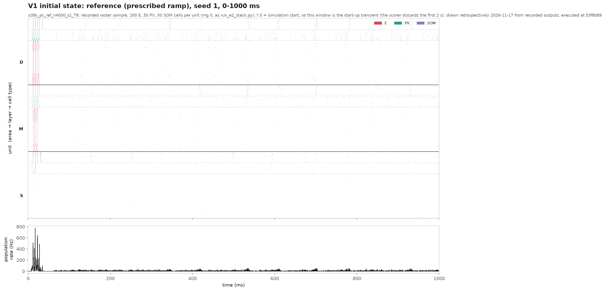
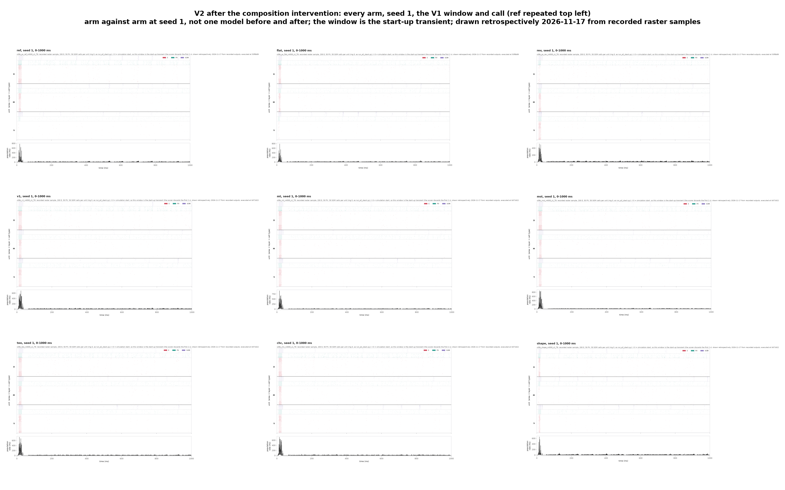
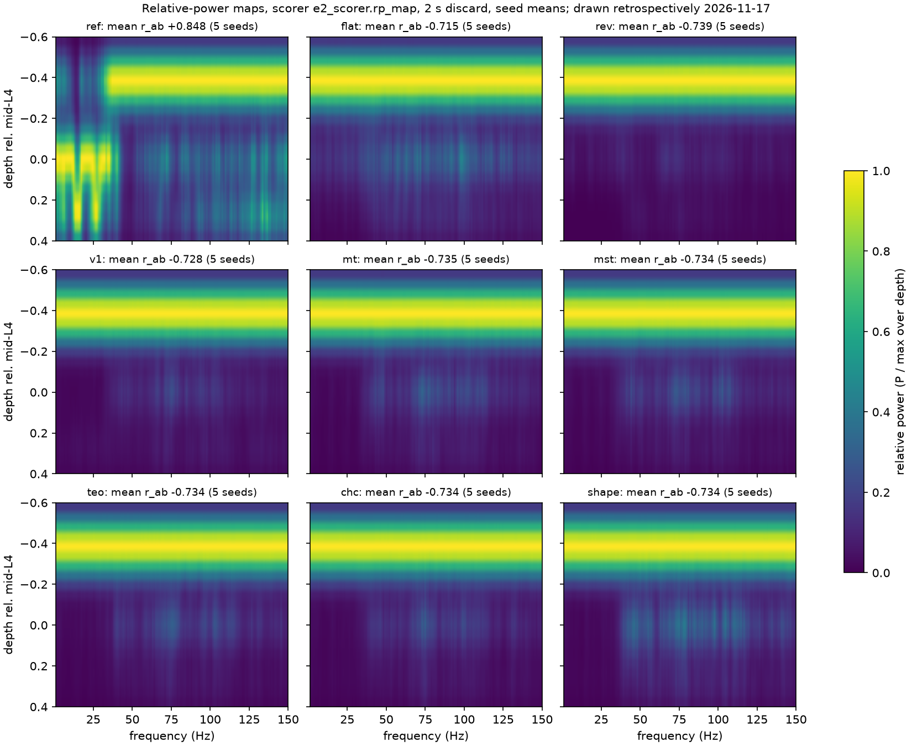
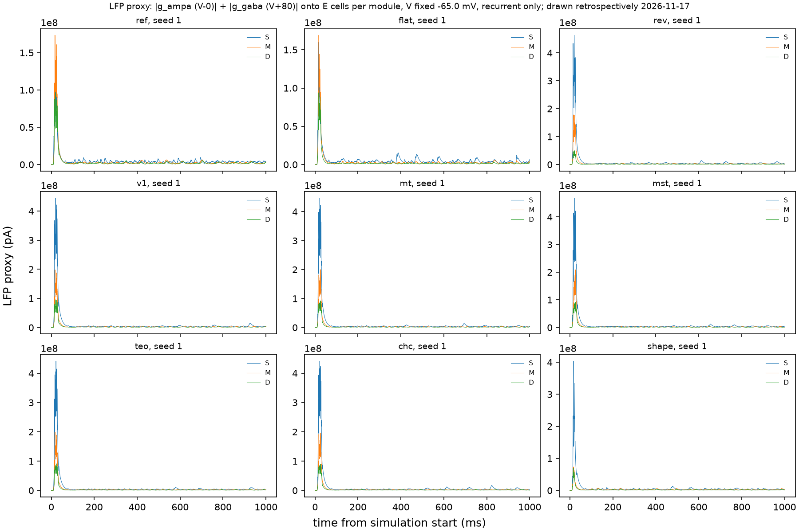

Retrospective. Created 2026-11-17T22:42:17Z from recorded outputs; no simulation was run to make it. Executions: stage 1 at 53f8b89, stage 2 at 0d71622. Each .npz matched the npz_sha256 in its stage's integrity receipt. Sources and hashes: provenance.json.

| block | record |
|---|---|
| e_e_S | 4684637 |
| e_pv_S | 705032 |
| e_sst_S | 175640 |
| pv_e_S | 703143 |
| pv_pv_S | 105504 |
| sst_e_S | 176231 |
| sst_pv_S | 26316 |
| e_e_M | 1882762 |
| e_pv_M | 176635 |
| e_sst_M | 177001 |
| pv_e_M | 176551 |
| pv_pv_M | 16577 |
| sst_e_M | 175993 |
| sst_pv_M | 16697 |
| e_e_D | 907526 |
| e_pv_D | 56442 |
| e_sst_D | 113463 |
| pv_e_D | 56463 |
| pv_pv_D | 3581 |
| sst_e_D | 113760 |
| sst_pv_D | 6958 |
| x_S_M_e_e | 294237 |
| x_S_M_e_pv | 27958 |
| x_S_M_e_som | 27672 |
| x_M_S_e_e | 925008 |
| x_M_S_e_pv | 138762 |
| x_M_S_e_som | 34793 |
| x_M_D_e_e | 408273 |
| x_M_D_e_pv | 25433 |
| x_M_D_e_som | 50841 |
| x_D_M_e_e | 292676 |
| x_D_M_e_pv | 27622 |
| x_D_M_e_som | 27430 |




| tag | stage | exec | r_ab | r_gm | r_proto | crossing_2se | S_E | S_PV | S_SOM | M_E | M_PV | M_SOM | D_E | D_PV | D_SOM |
|---|---|---|---|---|---|---|---|---|---|---|---|---|---|---|---|
| o38s_pc_ref_n4000_s1_T8 | stage1 | 53f8b89 | +0.8619 | +0.3302 | +0.3317 | True | 0.395 | 5.661 | 4.796 | 0.742 | 11.88 | 6.973 | 1.509 | 22.124 | 9.712 |
| o38s_pc_ref_n4000_s2_T8 | stage1 | 53f8b89 | +0.8606 | +0.3164 | +0.3054 | True | 0.411 | 5.668 | 4.907 | 0.713 | 11.759 | 6.833 | 1.505 | 22.33 | 9.755 |
| o38s_pc_ref_n4000_s3_T8 | stage1 | 53f8b89 | +0.8269 | +0.3976 | +0.3814 | True | 0.406 | 5.642 | 4.906 | 0.743 | 11.827 | 6.908 | 1.398 | 22.014 | 8.51 |
| o38s_pc_ref_n4000_s4_T8 | stage1 | 53f8b89 | +0.8165 | +0.3923 | +0.3528 | True | 0.403 | 5.672 | 4.884 | 0.736 | 11.942 | 6.75 | 1.484 | 21.851 | 8.959 |
| o38s_pc_ref_n4000_s5_T8 | stage1 | 53f8b89 | +0.8734 | +0.3082 | +0.3140 | True | 0.402 | 5.694 | 4.681 | 0.699 | 11.655 | 6.849 | 1.543 | 21.898 | 10.283 |
| o38s_pc_flat_n4000_s1_T8 | stage1 | 53f8b89 | -0.7061 | +0.5099 | +0.1843 | False | 0.372 | 7.137 | 5.539 | 0.727 | 10.896 | 6.064 | 1.171 | 15.164 | 5.954 |
| o38s_pc_flat_n4000_s2_T8 | stage1 | 53f8b89 | -0.7168 | +0.5025 | +0.1727 | False | 0.381 | 7.165 | 5.497 | 0.695 | 11.021 | 5.815 | 1.179 | 15.152 | 6.136 |
| o38s_pc_flat_n4000_s3_T8 | stage1 | 53f8b89 | -0.7093 | +0.5140 | +0.1815 | False | 0.372 | 7.049 | 5.643 | 0.752 | 10.888 | 6.309 | 1.181 | 15.243 | 6.119 |
| o38s_pc_flat_n4000_s4_T8 | stage1 | 53f8b89 | -0.7241 | +0.5055 | +0.1643 | False | 0.392 | 7.272 | 5.738 | 0.709 | 10.901 | 5.936 | 1.186 | 15.063 | 5.99 |
| o38s_pc_flat_n4000_s5_T8 | stage1 | 53f8b89 | -0.7181 | +0.5119 | +0.1760 | False | 0.382 | 7.075 | 5.682 | 0.725 | 10.764 | 5.927 | 1.175 | 15.209 | 6.22 |
| o38s_pc_rev_n4000_s1_T8 | stage1 | 53f8b89 | -0.7390 | +0.4955 | +0.1498 | False | 0.444 | 10.615 | 7.089 | 0.75 | 11.804 | 6.29 | 1.092 | 12.098 | 4.946 |
| o38s_pc_rev_n4000_s2_T8 | stage1 | 53f8b89 | -0.7383 | +0.4967 | +0.1504 | False | 0.442 | 10.821 | 7.231 | 0.747 | 11.861 | 6.504 | 1.123 | 12.133 | 5.092 |
| o38s_pc_rev_n4000_s3_T8 | stage1 | 53f8b89 | -0.7401 | +0.4907 | +0.1451 | False | 0.441 | 10.672 | 7.318 | 0.768 | 11.678 | 6.191 | 1.036 | 12.126 | 4.726 |
| o38s_pc_rev_n4000_s4_T8 | stage1 | 53f8b89 | -0.7394 | +0.4955 | +0.1482 | False | 0.461 | 10.741 | 7.341 | 0.748 | 11.865 | 6.098 | 1.103 | 12.166 | 4.965 |
| o38s_pc_rev_n4000_s5_T8 | stage1 | 53f8b89 | -0.7382 | +0.4857 | +0.1424 | False | 0.448 | 10.655 | 7.139 | 0.758 | 11.707 | 6.266 | 1.094 | 12.168 | 5.068 |
| o38s_v1_n4000_s1_T8 | stage2 | 0d71622 | -0.7263 | +0.4855 | +0.1448 | False | 0.408 | 9.661 | 6.219 | 0.712 | 9.83 | 5.741 | 1.373 | 19.618 | 8.104 |
| o38s_v1_n4000_s2_T8 | stage2 | 0d71622 | -0.7308 | +0.4772 | +0.1357 | False | 0.436 | 9.841 | 6.941 | 0.657 | 9.848 | 5.608 | 1.38 | 19.509 | 8.173 |
| o38s_v1_n4000_s3_T8 | stage2 | 0d71622 | -0.7321 | +0.5008 | +0.1540 | False | 0.407 | 9.59 | 6.28 | 0.734 | 9.862 | 5.559 | 1.265 | 19.71 | 6.898 |
| o38s_v1_n4000_s4_T8 | stage2 | 0d71622 | -0.7265 | +0.4846 | +0.1430 | False | 0.471 | 9.906 | 7.036 | 0.686 | 9.906 | 5.593 | 1.423 | 19.902 | 8.412 |
| o38s_v1_n4000_s5_T8 | stage2 | 0d71622 | -0.7248 | +0.4950 | +0.1502 | False | 0.407 | 9.401 | 6.144 | 0.699 | 9.764 | 5.558 | 1.335 | 19.395 | 7.931 |
| o38s_mt_n4000_s1_T8 | stage2 | 0d71622 | -0.7340 | +0.5022 | +0.1586 | False | 0.403 | 8.528 | 6.319 | 0.738 | 10.013 | 5.492 | 1.249 | 16.603 | 6.551 |
| o38s_mt_n4000_s2_T8 | stage2 | 0d71622 | -0.7367 | +0.4921 | +0.1479 | False | 0.406 | 8.534 | 5.943 | 0.691 | 10.075 | 5.187 | 1.203 | 16.513 | 6.094 |
| o38s_mt_n4000_s3_T8 | stage2 | 0d71622 | -0.7333 | +0.5055 | +0.1583 | False | 0.402 | 8.545 | 6.299 | 0.721 | 10.1 | 5.669 | 1.167 | 16.51 | 6.205 |
| o38s_mt_n4000_s4_T8 | stage2 | 0d71622 | -0.7361 | +0.5010 | +0.1531 | False | 0.44 | 8.9 | 6.654 | 0.707 | 9.983 | 5.504 | 1.228 | 16.302 | 6.44 |
| o38s_mt_n4000_s5_T8 | stage2 | 0d71622 | -0.7351 | +0.5048 | +0.1575 | False | 0.412 | 8.528 | 6.176 | 0.711 | 9.988 | 5.492 | 1.253 | 16.44 | 6.723 |
| o38s_mst_n4000_s1_T8 | stage2 | 0d71622 | -0.7331 | +0.5034 | +0.1583 | False | 0.409 | 8.535 | 6.307 | 0.726 | 10.124 | 5.773 | 1.256 | 16.821 | 6.833 |
| o38s_mst_n4000_s2_T8 | stage2 | 0d71622 | -0.7319 | +0.5002 | +0.1563 | False | 0.403 | 8.405 | 5.933 | 0.701 | 10.143 | 5.537 | 1.268 | 16.966 | 6.774 |
| o38s_mst_n4000_s3_T8 | stage2 | 0d71622 | -0.7367 | +0.4992 | +0.1554 | False | 0.419 | 8.447 | 6.419 | 0.723 | 10.117 | 5.462 | 1.176 | 16.931 | 6.267 |
| o38s_mst_n4000_s4_T8 | stage2 | 0d71622 | -0.7332 | +0.5057 | +0.1608 | False | 0.418 | 8.393 | 6.493 | 0.733 | 10.175 | 5.713 | 1.229 | 16.673 | 6.3 |
| o38s_mst_n4000_s5_T8 | stage2 | 0d71622 | -0.7355 | +0.5031 | +0.1549 | False | 0.409 | 8.57 | 6.084 | 0.707 | 10.094 | 5.513 | 1.259 | 16.747 | 6.689 |
| o38s_teo_n4000_s1_T8 | stage2 | 0d71622 | -0.7347 | +0.5100 | +0.1621 | False | 0.422 | 9.128 | 6.564 | 0.711 | 10.511 | 5.796 | 1.286 | 16.975 | 6.861 |
| o38s_teo_n4000_s2_T8 | stage2 | 0d71622 | -0.7334 | +0.5044 | +0.1565 | False | 0.417 | 8.987 | 6.605 | 0.689 | 10.461 | 5.574 | 1.291 | 17.129 | 6.762 |
| o38s_teo_n4000_s3_T8 | stage2 | 0d71622 | -0.7377 | +0.4975 | +0.1504 | False | 0.443 | 9.09 | 6.614 | 0.717 | 10.363 | 5.613 | 1.169 | 17.197 | 6.159 |
| o38s_teo_n4000_s4_T8 | stage2 | 0d71622 | -0.7350 | +0.5016 | +0.1540 | False | 0.414 | 8.984 | 6.452 | 0.725 | 10.525 | 5.866 | 1.226 | 17.124 | 6.497 |
| o38s_teo_n4000_s5_T8 | stage2 | 0d71622 | -0.7305 | +0.5212 | +0.1674 | False | 0.401 | 8.73 | 6.306 | 0.693 | 10.349 | 5.515 | 1.268 | 17.166 | 6.844 |
| o38s_chc_n4000_s1_T8 | stage2 | 0d71622 | -0.7316 | +0.5147 | +0.1632 | False | 0.431 | 8.862 | 6.564 | 0.705 | 10.038 | 5.51 | 1.239 | 17.388 | 6.949 |
| o38s_chc_n4000_s2_T8 | stage2 | 0d71622 | -0.7333 | +0.5081 | +0.1582 | False | 0.396 | 8.688 | 5.976 | 0.698 | 9.928 | 5.375 | 1.209 | 17.281 | 6.439 |
| o38s_chc_n4000_s3_T8 | stage2 | 0d71622 | -0.7350 | +0.4972 | +0.1505 | False | 0.439 | 8.898 | 6.7 | 0.716 | 10.038 | 5.746 | 1.17 | 17.643 | 6.654 |
| o38s_chc_n4000_s4_T8 | stage2 | 0d71622 | -0.7370 | +0.5004 | +0.1533 | False | 0.426 | 8.863 | 6.328 | 0.715 | 10.081 | 5.445 | 1.194 | 17.636 | 6.631 |
| o38s_chc_n4000_s5_T8 | stage2 | 0d71622 | -0.7310 | +0.4947 | +0.1512 | False | 0.415 | 8.632 | 6.435 | 0.715 | 10.003 | 5.624 | 1.308 | 17.35 | 6.983 |
| o38s_shape_n4000_s1_T8 | stage2 | 0d71622 | -0.7334 | +0.5048 | +0.1625 | False | 0.389 | 7.924 | 5.819 | 0.752 | 9.514 | 5.36 | 1.222 | 16.095 | 6.476 |
| o38s_shape_n4000_s2_T8 | stage2 | 0d71622 | -0.7380 | +0.5147 | +0.1651 | False | 0.41 | 8.135 | 6.371 | 0.693 | 9.663 | 5.122 | 1.194 | 16.097 | 5.874 |
| o38s_shape_n4000_s3_T8 | stage2 | 0d71622 | -0.7304 | +0.5071 | +0.1666 | False | 0.368 | 7.813 | 5.225 | 0.729 | 9.608 | 5.25 | 1.189 | 16.033 | 5.972 |
| o38s_shape_n4000_s4_T8 | stage2 | 0d71622 | -0.7332 | +0.5080 | +0.1670 | False | 0.386 | 7.847 | 5.568 | 0.717 | 9.574 | 5.309 | 1.189 | 16.035 | 5.86 |
| o38s_shape_n4000_s5_T8 | stage2 | 0d71622 | -0.7355 | +0.5095 | +0.1626 | False | 0.389 | 8.001 | 5.953 | 0.712 | 9.544 | 5.092 | 1.224 | 15.926 | 6.439 |
Membrane potential, I_net, H, A, m(H) and plastic weights: run_e2_stack.py did not record them, and the model has no plasticity. Weights are the static constructed weights shown in V0 and the edge table.